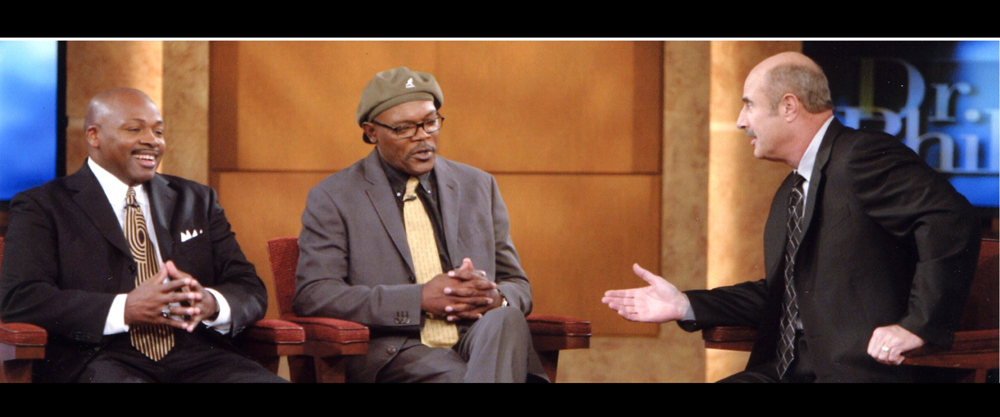

Don't takeour word for it.
Twenty-five years of national airtime, red carpets, packed arenas and lecture halls. Linked to the outlets that ran it. Items still coming from Coach's archive are marked.
since 2005
Canada
distinctions
Getty Images archive
The country
tuned in.
From the week of the lockout to today, Coach has carried the message on the biggest platforms in American media.
The company
he keeps.


Gold-bordered frames are reserved for licensed Getty editorial photos and Coach's own archive. Preview only.
Coast
to coast.
Universities, business summits, trade conventions, school districts, churches and youth organizations. Hover a lit state to see where he's been.
Also: Halifax & North Preston, Nova Scotia, Canada · 2017
Boardrooms
Athene Beyond Boundaries Business Summit, presented by Chase (2026) · NAI Global Convention (2023) · Petfood Forum (2022) · ASI Show Chicago (2017) · Mississippi Economic Council (2015) · GTC West (2006)
Lecture halls
Wake Forest · Lehigh · Tennessee · Grand Valley State · Mississippi State · Baylor · Syracuse · St. Thomas · North Texas · Ball State · CSU Pueblo · Southern Illinois · Penn State Harrisburg
Gyms & sanctuaries
My Brother's Keeper, Las Vegas (2026) · Boys & Girls Clubs of Central Wyoming (2026) · Rome YMCA (2024) · Youngstown City Schools (2021) · Bay Area Rescue Mission (2023) · Life Is Beautiful (2015)
See him
work a room.
Mississippi Economic Council PowerPlay, 2015 — the full talk.

Honored for
the work.
Olympic Torchbearer
Carried the flame for Richmond and the Bay Area ahead of the Salt Lake City Winter Games.
Distinguished Secondary Educator
Recognized for excellence in secondary education.
Impact Citizen of the Year
For leadership and impact in his community.
Heroes in Education
California State Lottery award presented with Governor Gray Davis.
Mayor Willie Brown Leadership Award
Leadership honor from the City of San Francisco.
Unsung Heroes Award
Statewide recognition for service to young people.